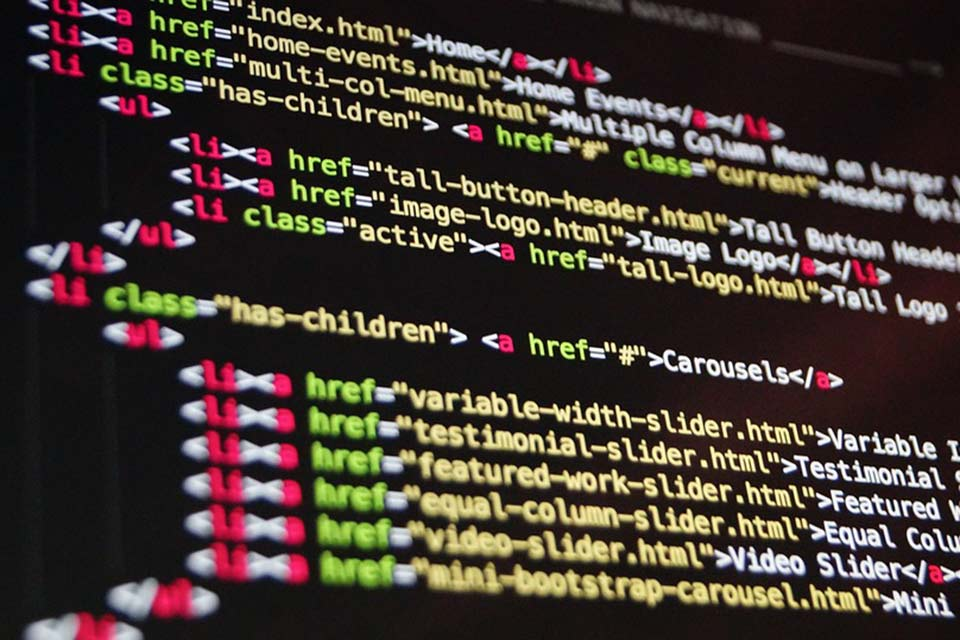

Me gustaria tener un trabajo sobre mi carrera profesional algo que siempre me a llamado la atencion fue la programacion web me gustaria crear paginas web como freelancer o tambien trabajar para alguna empresa de mi ciudad como ingeniero en software podria ser remoto o presencial pero de preferencia remoto.
| Requisitos | Descripcion |
| Fortalecer mi conocimiento en FrontEnd | Seguir aprendiendo y adquirir conocimiento sobres estos lenguajes dee programacion que son importandes para el frontend tal como HTML CSS y javascript |
| Seguir creando proyectos | Crear proyectos donde pueda ir practicando lo aprendido y para no perder lo aprendido |
| Iniciar usar GitHub como portafolio | Para poder llegar a una entrevista de trabajo con proyectos para que la empresa pueda ver lo que puedo hacer y pueda ver mis trabajos pasados |
| Aprender backend | Aprender y estudiar los lenguajes para backend |
